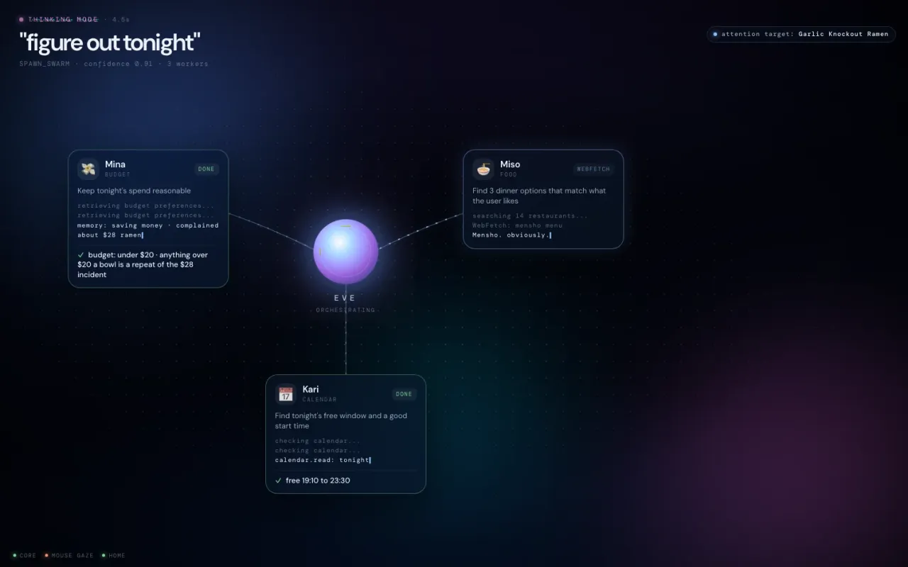
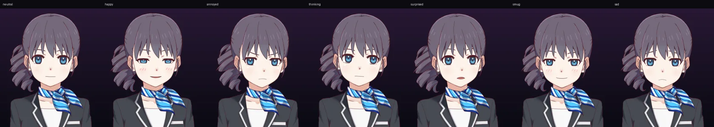
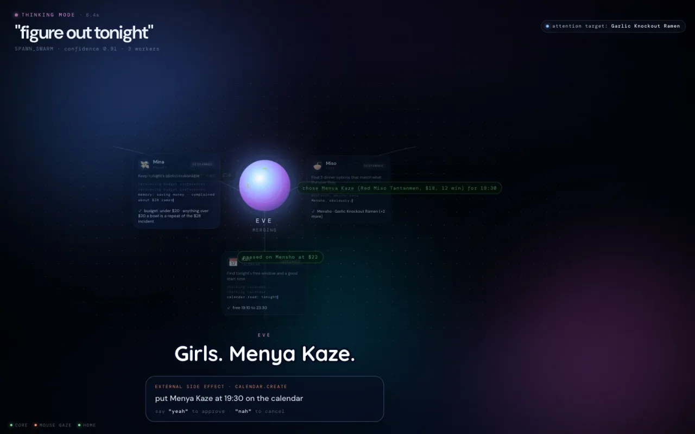
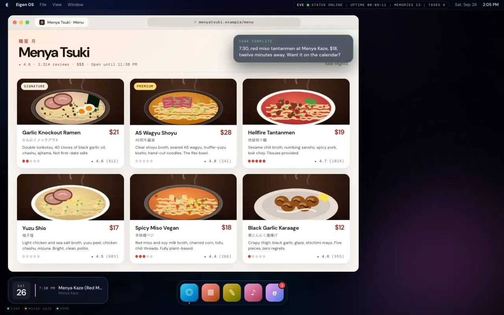

ACT I
Eigenvector
"learn me"
A fake dating app. Webcam eye tracking measures what you fixate on, revisit, and skip. Attention becomes reward, reward weights candidate traits, and a latent preference vector converges.
P = Σ rᵢ·Cᵢ / Σ rᵢ
LATENT PARTNER MODEL · 31%
your type, compiled.
Dating apps ask what your type is. We don't think you know. So we watch what actually gets your attention, compile it into a person, and then she moves in: shares your gaze, remembers your life, and does things on her own computer.
apparently I'm your type.
the meme is "AI girlfriend." the actual thesis:
Persistent multimodal agents should share attention with humans, maintain long-term memory, and act continuously in the world instead of waiting for explicit prompts.
starts as a joke dating app. ends looking like a prototype for ambient AGI.
"learn me"
A fake dating app. Webcam eye tracking measures what you fixate on, revisit, and skip. Attention becomes reward, reward weights candidate traits, and a latent preference vector converges.
P = Σ rᵢ·Cᵢ / Σ rᵢ
"become someone"
Convergence detected. The recommendation steps out of the card onto your desktop, her personality seeded by your own vector. She shares your gaze: say "thoughts?" and she knows what "this" is.
humor .86 · sarcasm .76 · chaos .61
"understand me"
Memory, continuity, initiative. A reflex layer decides when to speak (mostly: don't). She remembers the $28 ramen you complained about last Tuesday.
IGNORE 0.91 · COMMENT 0.78

"do things for me"
"Just figure out tonight." She fans out into a visible swarm (memory, places, calendar), then actually does it on her own computer. 7:30, cheap ramen, you're free. Done.
EXTERNAL_SIDE_EFFECT → ask
No webcam here, so your cursor stands in for your eyes. Hover (or tap) whoever you're drawn to. Linger. We're watching.
Live2D rig, seven moods, blinks, breathing, and she glances at whatever you're looking at.



one faculty per sponsor, one shared event bus.
perception
where you look, and what it is
reflex
fast bounded judgments: speak or shut up
memory
episodic + preference memory
personality
cheap, frequent, in-character lines
reasoning
planning and computer use, only when needed
orchestration
event bus, routing, tools, state
workspace
her desk: visible multi-agent thinking
persistence + action
her own computer. she lives there.
observe, decide, act, observe again. knowing when not to talk is part of the intelligence.
SYSTEM 0 · sensors
gaze, voice, screen, browser, timers → one event stream
GAZE_FIXATION ramen-card-3 · 2841ms
SYSTEM 1 · reflex
every event gets a verdict in milliseconds. 80 to 95% are IGNORE.
SYSTEM 2 · frontier
memory recall, planning, computer use. never for "should she laugh?"
remembered · 4ms · likes spicy · $28 ramen incident
the golden path, straight out of Eigen OS. full two-minute cut drops after judging.
real capture of the shell, recorded headless. a mouse stands in for the eye tracker.